# Importing libraries
import pandas as pd
import numpy as np
from sklearn.linear_model import LogisticRegression
from sklearn.preprocessing import LabelEncoder
import warnings
warnings.filterwarnings('ignore')
# Load the dataset
data = pd.read_csv('Iris-API/iris.csv')Lecture 16 - Deploying Projects as Web Applications


- 16.1 Introduction to Web APIs for Model Serving
- 16.2 Deploying a Model for Iris Flowers Classification with Flask
- 16.3 Deploying a Model with FastAPI
- 16.4 Deploying a Model with Django
- 16.5 Deploying a Model for MNIST Digits Classification with Flask
- Appendix: Django Project Structure
- References
16.1 Introduction to Web APIs for Model Serving
After a predictive model for a Data Science (DS) project is developed, the next steps in the project life cycle include deploying the model and serving the model to end-users. One approach for serving the model is via a web API where the end-users can submit requests to query the model, and obtain the model’s predictions as responses to their queries.
In general, an API (Application Programming Interface) enables software applications to communicate with each other and exchange data. In the context of web APIs, the terms client and server are typically used to refer to the two main components that are involved in the communication between software applications over the web. The client is typically a front-end application that runs in a web browser and allows end-users to access data or services from the server. The client sends a request to the server, usually in the form of an HTTP request. The server is the application that receives and processes requests from clients. The server performs actions based on the requests, and sends a response back to the client. When a response is received from the server, the client presents the data to the end-users and/or it may take other actions based on the response from the server.
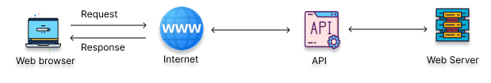
Figure: Web API. Source: [4].
An example of usage of a web API in Data Science is for accessing predictions from a model that is deployed on a server. The end-user interacts with a front-end application that runs in a web browser and submits a request to initiate an API call (e.g., submit an image for classification or submit tabular data inputs for classification). The API calls the server to obtain predictions from the model. After the model makes the prediction, the API transfers the prediction to the end-user in the form of JSON, XML, CSV, or another format.
Similarly, another use of web APIs in Data Science is for accessing data from a database that is hosted on a server. Afterward, the retrieved data can be used to train a predictive model.
16.1.1 REST Architecture
Three common approaches for building web APIs for Data Science applications are: SOAP (Simple Object Access Protocol), REST (REpresentational State Transfer), and gRPC (Remote Procedure Call).
SOAP is a protocol for communication between computer systems, defined by the World Wide Web Consortium that uses XML for message formatting and relies on application layer protocols (e.g., HTTP, SMTP) for message negotiation and transmission. However, the strict standards of SOAP make it less developer-friendly, and it has been less popular for building web APIs for Data Science compared to REST and gRPC.
REST is an architecture (not a protocol) that defines a set of constraints for communication over a network and promotes simplicity, scalability, and reliability. It uses HTTP methods for communication and data exchange. REST has been very popular for building web APIs, since it introduces guidelines regarding the architecture of an API instead of defining rules of specifications for the data exchange, it is easy to implement, and it is supported by many libraries and tools.
gRPC (Google Remote Procedure Call) is a high-performance, open-source framework developed by Google, that uses Protocol Buffers (Protobuf) for defining API communication and serializing data. gRPC’s high performance and real-time streaming capabilities make it increasingly popular for developing web APIs for Data Science projects. However, it requires the use of Protobuf and additional gRPC tools and plugins, which add complexity in setting up the development environment and learning the syntax in comparison to REST.
REST (REpresentational State Transfer) defines the following architectural constraints:
- Stateless: The server won’t maintain any state between requests from the client, and every request must contain all necessary information. I.e., the server cannot use information from previous requests by the client.
- Client-server design: The client and server must be decoupled from each other. The decoupling helps them to evolve independently.
- Cacheable: The response from the server should be cacheable, and it can be reused later by the client, if needed.
- Uniform interface: The data transfer from the server to the client will be in a standardized format, instead of a format that is specific to one application.
- Layered system: The client may access the resources on the server indirectly through other layers. Also, the server can have multiple layers, such as security, application, business logic, and these layers must remain invisible to the client.
- Code on demand: The client may extend functionalities by downloading code blocks from the server.
An API that adheres to the REST guidelines is referred to as RESTful API or simply REST API.
RESTful APIs provide access to web services through public web URLs, referred to as endpoints. The client sends an HTTP request to the specific URL, and the RESTful API uses HTTP methods to manage the resources in the web service. Although there are many HTTP methods, the most commonly used methods with RESTful APIs include: GET (retrieve resources), POST (create a new resource), PUT (update an existing resource), PATCH (partially update an existing resource), and DELETE (delete a resource).
16.1.2 RESTful APIs
RESTful APIs can be developed in different programming languages. Examples of libraries include Node.js in Javascript, Roda and Sinatra in Ruby, Spring Boot in Java, etc.
In Python, the most popular libraries for developing RESTful APIs are Flask, FastAPI, and Django.
Flask is a micro framework for developing RESTful APIs, which means that it is lightweight and provides the basic components for serving predictive models as web services. Flask is the easiest to learn and use in comparison to the other frameworks, and it is known for its simplicity and flexibility. However, it also has limitations in terms of functionality, since it is designed for low-volume APIs, and does not scale well to large applications. Also, Flask is a general-purpose web framework and may require importing additional libraries for specific functionalities.
FastAPI is also a lightweight framework, but it is designed specifically for building web APIs quickly and efficiently. FastAPI was introduced in 2018 and it is a newer framework, but it has quickly gained popularity among developers. Its unique characteristic is its speed, as it is the fastest Python framework. As it is explicitly designed for building web APIs, FastAPI offers many features for automating the building of APIs.
Django is a full-stack web framework, that has many built-in features and a specific project structure. This makes it more difficult to learn than Flask and FastAPI. On the other hand, Django is a powerful framework that has been used in many large-scale projects as it offers various features for building APIs. This is considered advantageous by developers who want a more structured framework or who prefer a comprehensive solution without relying on many third-party packages.
There are also other similar Python libraries for developing RESTful APIs. As well as, numerous frameworks for developing RESTful APIs as cloud services are available from cloud providers such as Amazon SageMaker, Azure ML, Google Cloud ML, IBM Watson Cloud, and others. These cloud frameworks provide access to pretrained models, deployment of custom models, and allow easy integration of predictive models into users’ applications.
In this lecture we will first demonstrate building a web API for Data Science projects with Flask, and afterward we will see examples of building a web API with FastAPI and Django.
16.2 Deploying a Model for Iris Flowers Classification with Flask
This section was inspired by the article Deploying Machine Learning Models using Flask.
The goal is to deploy a simple Machine Learning model for classification of the Iris dataset, which we used in Lecture 10. Recall that the dataset consists of measurements of three different species of irises:
- Iris Setosa
- Iris Versicolour
- Iris Virginica
Each data point has 4 features, which include:
- Sepal length in cm
- Sepal width in cm
- Petal length in cm
- Petal width in cm
Let’s load the dataset using Pandas, and display the dataframe.
data| sepal.length | sepal.width | petal.length | petal.width | variety | |
|---|---|---|---|---|---|
| 0 | 5.1 | 3.5 | 1.4 | 0.2 | Setosa |
| 1 | 4.9 | 3.0 | 1.4 | 0.2 | Setosa |
| 2 | 4.7 | 3.2 | 1.3 | 0.2 | Setosa |
| 3 | 4.6 | 3.1 | 1.5 | 0.2 | Setosa |
| 4 | 5.0 | 3.6 | 1.4 | 0.2 | Setosa |
| ... | ... | ... | ... | ... | ... |
| 145 | 6.7 | 3.0 | 5.2 | 2.3 | Virginica |
| 146 | 6.3 | 2.5 | 5.0 | 1.9 | Virginica |
| 147 | 6.5 | 3.0 | 5.2 | 2.0 | Virginica |
| 148 | 6.2 | 3.4 | 5.4 | 2.3 | Virginica |
| 149 | 5.9 | 3.0 | 5.1 | 1.8 | Virginica |
150 rows × 5 columns
In the dataframe, the variety column contains the target labels. First, we will convert the labels from categorical values to numerical values by applying the LabelEncoder from scikit-learn library.
# Convert the label column into ordinal format
label_feature = data[['variety']]
label_encoder = LabelEncoder()
label_encoded = label_encoder.fit_transform(label_feature)
data['variety'] = pd.DataFrame(label_encoded, columns=label_feature.columns, index=label_feature.index)
data| sepal.length | sepal.width | petal.length | petal.width | variety | |
|---|---|---|---|---|---|
| 0 | 5.1 | 3.5 | 1.4 | 0.2 | 0 |
| 1 | 4.9 | 3.0 | 1.4 | 0.2 | 0 |
| 2 | 4.7 | 3.2 | 1.3 | 0.2 | 0 |
| 3 | 4.6 | 3.1 | 1.5 | 0.2 | 0 |
| 4 | 5.0 | 3.6 | 1.4 | 0.2 | 0 |
| ... | ... | ... | ... | ... | ... |
| 145 | 6.7 | 3.0 | 5.2 | 2.3 | 2 |
| 146 | 6.3 | 2.5 | 5.0 | 1.9 | 2 |
| 147 | 6.5 | 3.0 | 5.2 | 2.0 | 2 |
| 148 | 6.2 | 3.4 | 5.4 | 2.3 | 2 |
| 149 | 5.9 | 3.0 | 5.1 | 1.8 | 2 |
150 rows × 5 columns
16.2.1 Model Training and Prediction
Let’s extract the training features from the dataframe into variable X and the training labels into variable y.
In the following cell, we use a Logistic Regression model from scikit-learn to train a classification model.
# Extract the features X and target y variables
X = data.drop(['variety'], axis=1)
y = data['variety']# Train a Logistic Regression model
logreg_model = LogisticRegression()
logreg_model.fit(X, y) LogisticRegression()In a Jupyter environment, please rerun this cell to show the HTML representation or trust the notebook.
On GitHub, the HTML representation is unable to render, please try loading this page with nbviewer.org.
LogisticRegression()
Finally, let’s define a function classify that takes 4 input arguments, and predicts the class of the iris flowers. The four inputs a, b, c, and d correspond to the sepal length and width, and petal length and width. The classify function first converts the inputs to a numpy array, and reshapes the array to represent a batch with 1 data instance. Afterward, the trained Logistic Regression classifier is used to predict the variety of an iris flower.
# Predict the iris class based on inputs a, b, c, d
def classify(a, b, c, d):
arr = np.array([a, b, c, d], dtype=np.float64) # Convert to numpy array
query = arr.reshape(1, -1) # Reshape the array
prediction = logreg_model.predict(query)[0] # Make a prediction
variety = variety_mappings[prediction] # Map the prediction to iris variety
return variety # Return the iris variety
# Dictionary containing the mapping
variety_mappings = {0: 'Setosa', 1: 'Versicolor', 2: 'Virginica'}To make sure that the function classify works, in the following cell a set of four input values is passed to classify. We can see that the output is the iris target label, as expected.
classify(1.0, 1.0, 2.0, 2.0)'Setosa'The above code for classifying iris flowers is saved as model.py under the directory Iris-API/model.py.
16.2.2 Creating an HTML Webpage
Next, we will build the following simple HTML page to accept inputs from the end-users.
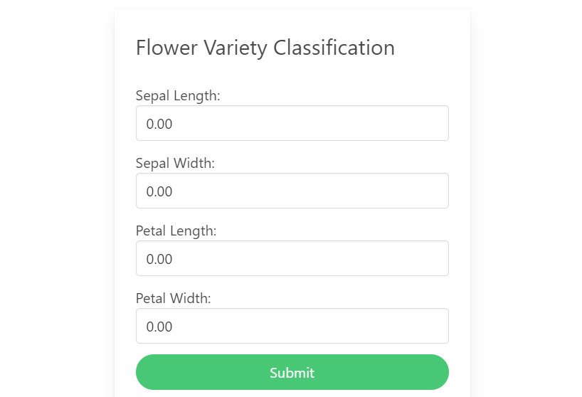
Figure: Home webpage to accept inputs from end-users.
The HTML code for the input form is shown below, containing head and body sections. The head defines metadata and styles with the tags <meta> and <style>.
The body contains <div> tags with class='field' for each of the 4 inputs: sepal/petal lengths/widths. Each input tag has class="input" and type="number" to accept numerical values from the end-users. All the <div> tags are enclosed within a form with action="predict" and method="GET". The GET method is used to transport the data from the HTML form to the Flask app.
The HTML code is saved as index.html file under the directory Iris-API/templates/index.html.
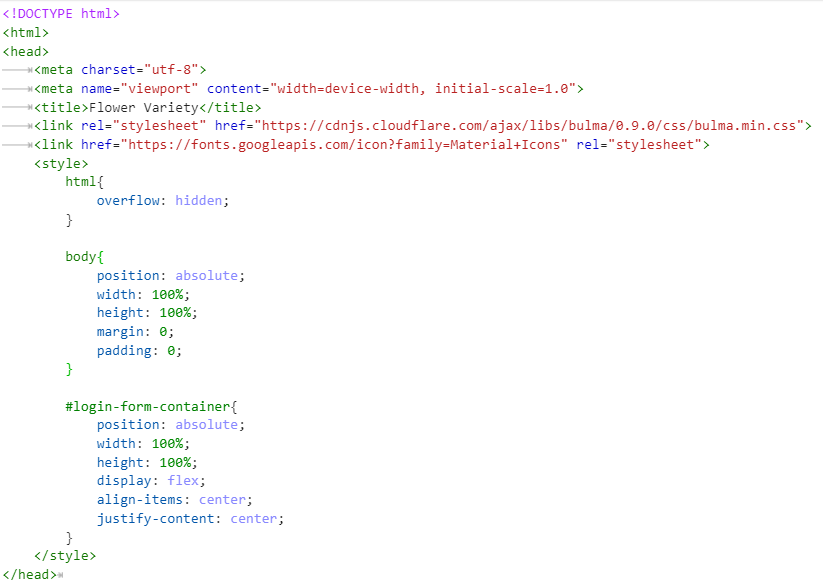
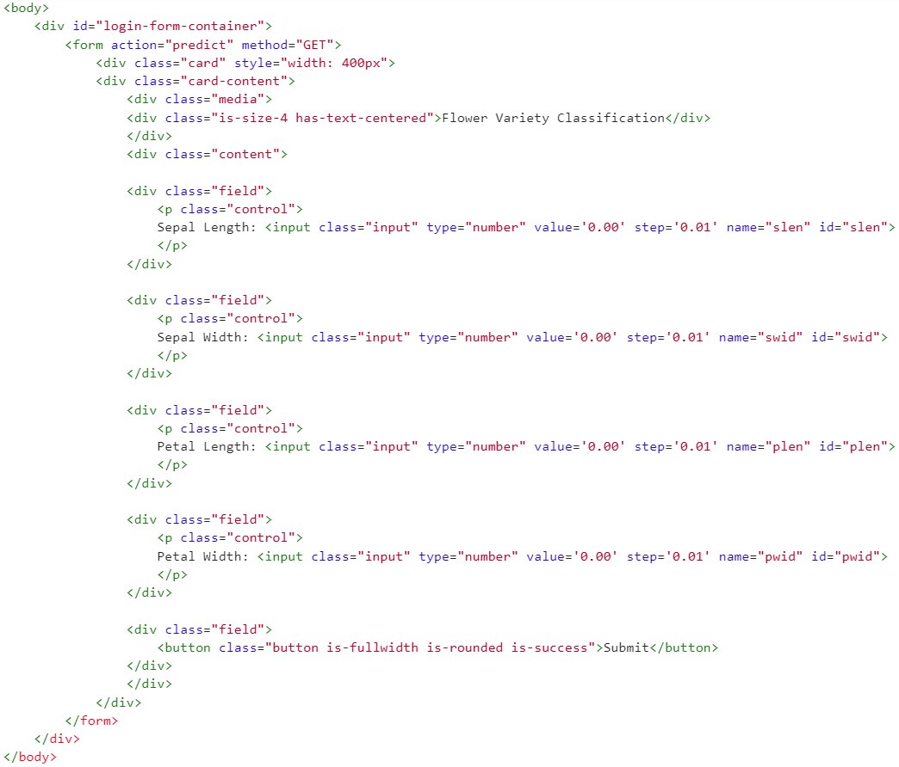
Figure: Head and Body of the home HTML page.
16.2.3 Creating a Flask App
Next, we will use the Flask framework to deploy the Machine Learning model locally. Note that Flask is not typically run from Jupyter Notebooks, and therefore we will save the code from this section as a Python script app.py and we will run the script from the command line in a terminal.
Let’s first import the model module that we created in the previous section. Next, we import the flask library, as well as the related libraries request (for accessing data sent with HTTP requests), and render_template (for generating HTML pages by combining templates with data).
Building the Flask server begins with creating an instance of the Flask application, which we assigned to the name app. The argument __name__ associates the instance with the name of the current module, and Flask uses it to locate the root path of the application. The template_folder argument specifies the directory where Flask will look for HTML templates for rendering the webpages for input parameters and model output.
import model # Import the python file containing the ML model
from flask import Flask, request, render_template # Import flask libraries
# Initialize the flask class and specify the templates directory
app = Flask(__name__, template_folder="templates")In Flask, routes define the actions that the web API should take when a specific URL is accessed by the end-user in a web browser. Routes in Flask are defined using the @app.route decorator. This decorator is associated with a function that specifies the actions to a particular URL. In this example, we will define two routes: route '/' that corresponds to the home page where the end-user enters the input values for iris flowers, and route '/predict' that sends the input values to the model for inference and displays the model’s prediction.
Therefore, in the next cell we set the default route of the Flask application using @app.route('/'). The route '/' in Flask is the root or home route. When we access the root URL of the application (e.g., http://127.0.0.1:5000/), the function index_view will be called, and it will render the HTML page 'index.html' in the web browser. The render_template() is a Flask function that takes an HTML file as an argument and processes it for sending as the response to the end-user’s request. This is a common way of creating a simple home page for a web API.
# Default route set as 'index'
@app.route('/')
def index_view():
return render_template('index.html') # Render index.htmlSimilarly, in the next cell we create a separate Flask route for the Machine Learning model, that accepts inputs for the model, makes a prediction, and renders the results in a webpage.
Specifically, we use the /predict route with the method 'GET'. This route will retrieve the data from the fields in the index.html webpage through a GET request. For this purpose, we use request.args.get() to extract the data from each of the input fields in the form, using the name attributes for the petal and sepal dimensions.
The retrieved inputs sepal_len, sepal_wid, petal_len, petal_wid are then passed to the classify() method of the Machine Learning model to make a prediction about the variety of the iris flower. The result from the model’s prediction is assigned to the variable variety.
The variable variety is next passed to the HTML file output.html to render the predicted variety of flowers and display it in a new webpage. For this, we used the function render_template(filename, arguments) where we specified the HTML file 'output.html' along with the predicted variable variety.
Finally, if an exception occurs during the execution of the try block (e.g., an error in model prediction or input parameters), the message 'Error' will be returned.
# Route 'predict' accepts GET request
@app.route('/predict', methods=['GET'])
def predict_class():
try:
sepal_len = request.args.get('slen') # Get parameters for sepal length
sepal_wid = request.args.get('swid') # Get parameters for sepal width
petal_len = request.args.get('plen') # Get parameters for petal length
petal_wid = request.args.get('pwid') # Get parameters for petal width
# Get the output from the classification model
variety = model.classify(sepal_len, sepal_wid, petal_len, petal_wid)
# Render the output in new HTML page
return render_template('output.html', variety=variety)
except:
return 'Error'To run the Flask webserver, we use the app.run() method as shown below. The debug=True argument enables the debug mode, which provides additional information in case of errors.
# Run the Flask server
if(__name__=='__main__'):
app.run(debug=True) The code for Flask is saved as app.py under the directory Iris-API/app.py. We will use it later to run the web application.
16.2.4 Output Webpage
We need to also create another even simpler HTML page to display the output of the classification.
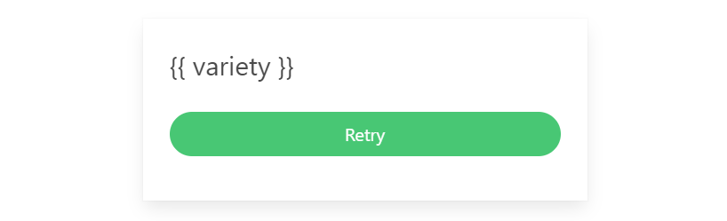
Figure: Output webpage to present the model’s prediction to end-users.
The body of the code is shown below, and it is saved as output.html in the directory ./templates/output.html. In the code { variety } specifies the argument that was passed to get rendered in the new HTML file.
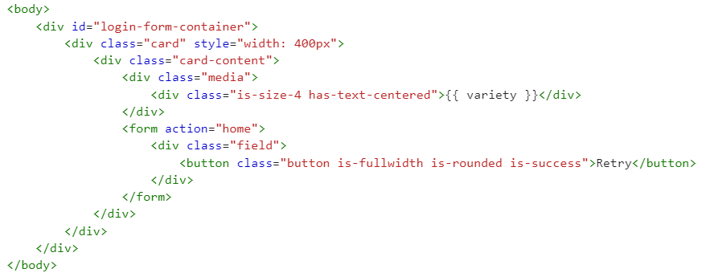
Figure: Body of HTML file for the output webpage.
16.2.5 Run the Web Application
To deploy the application, we will execute the command python app.py from the terminal. Don’t forget to first change the directory to Iris-API where the file app.py is saved.
The output is shown in the figure below. We can see that there are warning messages with recommendations for changes in the code, but these warnings do not affect the functionality of the app. There is also a warning that this is a development server, which is primarily intended for testing and debugging purposes. If we would like to deploy the web application in production, we will need to use WSGI (Web Server Gateway Interface) server that is designed to handle a large number of requests and is optimized for performance and scalability.
We can also see that the server is running in debug mode on http://127.0.0.1:5000/ (given with the IP Address:Port).
To start the application on the local machine, we can either click on the URL http://127.0.0.1:5000/, or we can copy and paste the URL into a web browser.
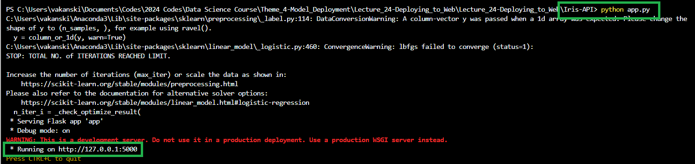
Figure: Run the application.
The following are screenshots of the application for one example and the predicted iris class is Setosa.
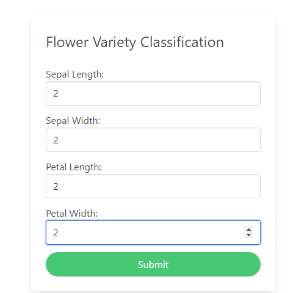
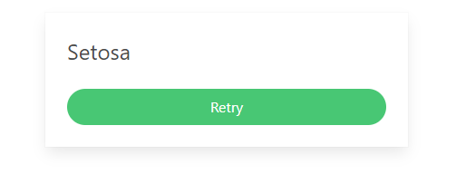
Figure: Entered inputs and predicted class.
The folder structure is as follows:
Iris-API
├── iris.csv
├── model.py
├── app.py
├── templates
│ ├── index.html
│ ├── output.htmlThe complete code for this and the following examples (Iris-API, FastAPI-Iris, Django-Iris, Django-Iris-Project, and MNIST-API) is provided in the folders next to this notebook in the course repository.
16.3 Deploying a Model with FastAPI
This section explains how to develop a RESTful API for classification of Iris flowers with the FastAPI library. The code is similar to the Flask app, but there are several differences in the syntax and the implementation.
Before developing the API, we need to install the required libraries with pip install fastapi python-multipart uvicorn. Note that Flask is part of the Anaconda installation, and it does not need to be installed if you have Anaconda. However, FastAPI is not and it needs to installed.
The code for the app.py server in FastAPI is shown below.
First, we import modules from FastAPI for handling HTTP requests and for template rendering.
Next, we instantiate the app web application from the FastAPI() class. And we define the directory with the HTML templates. FastAPI uses Jinja2 for template rendering, allowing to create dynamic HTML pages.
# Import libraries
from fastapi import FastAPI, Request
from fastapi.templating import Jinja2Templates
import model
# Initialize the FastAPI class and specify the templates directory
app = FastAPI()
templates = Jinja2Templates(directory="templates")Similar to the Flask app, in FastAPI we use the @app.get('/') decorator to associate the HTTP GET method with the default home page of the application. In FastAPI, the Request class is used to handle the incoming requests, where request is an instance that contains the information about the HTTP request. The index_view function will render a template of the index.html file and will pass the request object to it. Note that request is passed as the first argument to TemplateResponse(), followed by the name of the template, and for the output.html template, a dictionary with the values to display.
The '/predict' route will handle the GET request. The predict_class function retrieves the input values slen, swid, plen, and pwid and calls model.classify() to predict the variety of the Iris flower. The function will render a template of the output.html file and will pass variety to be displayed to the user.
Finally, the web application is run using the uvicorn server. UVicorn is the default server for FastAPI in Python.
# Default route set as 'index'
@app.get('/')
def index_view(request: Request):
return templates.TemplateResponse(request, "index.html")
# Route 'predict' accepts GET request
@app.get('/predict')
def predict_class(request: Request, slen, swid, plen, pwid):
# Get the output from the classification model
variety = model.classify(slen, swid, plen, pwid)
# Render the output in a new HTML page
return templates.TemplateResponse(request, "output.html", {"variety": variety})
# Run the FastAPI server
if __name__ == '__main__':
import uvicorn
uvicorn.run(app)16.4 Deploying a Model with Django
The corresponding code for developing a RESTful API for classification of Iris flowers with the Django library is shown below. Before running the code, please first install Django (e.g., pip install django).
Please note that this code is a minimal app that is written to show the similarities with Flask and FastAPI. In practice, the web APIs developed with Django are expected to follow a defined program structure. A simple example is presented in the Appendix of this lecture.
In the code below, the functions index_view and predict_class define the rendering of the home page and the predicted outputs by the model, similar to the apps in Flask and FastAPI.
The URL patterns define that the root path maps to the index_view function, and the 'predict' path maps to the predict_class function.
The last part of the code defines the configuration settings and the execution of the server with app.py runserver.
import django
from django.shortcuts import render
from django.urls import path
from django.core.management import execute_from_command_line
from django.conf import settings
import model
# Default route set as 'index'
def index_view(request):
return render(request, 'index.html')
# Route 'predict' accepts GET request
def predict_class(request):
slen = float(request.GET.get('slen'))
swid = float(request.GET.get('swid'))
plen = float(request.GET.get('plen'))
pwid = float(request.GET.get('pwid'))
# Get the output from the classification model
variety = model.classify(slen, swid, plen, pwid)
# Render the output in a new HTML page
return render(request, 'output.html', {'variety': variety})
# URL patterns define which function is called for specific URL paths
urlpatterns = [path('', index_view),
path('predict/', predict_class)]
# Django settings and execution
if __name__ == '__main__':
# Define the templates directory and debug mode
settings.configure(
DEBUG=True,
ROOT_URLCONF=__name__,
TEMPLATES=[{ 'BACKEND': 'django.template.backends.django.DjangoTemplates', 'DIRS': ['templates'], 'APP_DIRS': True, }, ], )
# Execute the server from the command line
django.setup()
execute_from_command_line(['app.py', 'runserver'])16.5 Deploying a Model for MNIST Digits Classification with Flask
In this section we will create another web API for classification of MNIST digits. Differently from the previous section, we will use a Convolutional Neural Network model, as well as, we will save the trained model and use it for prediction. The code is mostly based on this section from the following blog: Deploying Deep Learning Models Part 1: Preparing the Model.
16.5.1 Model Training and Saving
We will first load the MNIST dataset, and we will create a simple Convolutional Neural Network for classification of the digit images in the dataset.
import tensorflow
from tensorflow.keras.datasets import mnist
from tensorflow.keras.models import Model
from tensorflow.keras.layers import Input, Dense, Dropout, Flatten, Conv2D, MaxPooling2D# Load the data
(x_train, y_train), (x_test, y_test) = mnist.load_data()# Scale the images to the range [0,1]
x_train = x_train.astype('float32')
x_test = x_test.astype('float32')
x_train /= 255
x_test /= 255
# Print the shape and number of samples
print('x_train shape:', x_train.shape)
print(x_train.shape[0], 'train samples')
print(x_test.shape[0], 'test samples')x_train shape: (60000, 28, 28)
60000 train samples
10000 test samples# Define the layers in the model
inputs = Input(shape=(28, 28, 1))
conv1a = Conv2D(filters=32, kernel_size=3, padding='same')(inputs)
conv1b = Conv2D(filters=64, kernel_size=3, padding='same')(conv1a)
pool1 = MaxPooling2D()(conv1b)
flat = Flatten()(pool1)
dense1 = Dense(128, activation='relu')(flat)
dropout1 = Dropout(0.5)(dense1)
outputs = Dense(10, activation='softmax')(dropout1)
# Define the model with inputs and outputs
model = Model(inputs, outputs)# Compile and train the model
model.compile(loss='sparse_categorical_crossentropy', optimizer='adam', metrics=['accuracy'])
model.fit(x_train, y_train, batch_size=128, epochs=5, verbose=0)<keras.src.callbacks.history.History at 0x2cdf420dd30># Evaluate on test dataset
score = model.evaluate(x_test, y_test, verbose=0)
print('Test accuracy:', score[1])Test accuracy: 0.9850999712944031Next, we will save the model using the Keras-TensorFlow SaveModel format. We will use the saved model to make predictions in the web application without retraining the model, since training the model takes time and there is no need to train a new model every time the end-users need to make predictions.
# save the model to a file
model.save("mnist_model.keras")To make predictions, we can load the model and compile it, as in the following cell.
from tensorflow.keras.models import load_model
# load the weights into new model
loaded_model = load_model("mnist_model.keras")
# Compile and evaluate loaded model
loaded_model.compile(loss='sparse_categorical_crossentropy', optimizer='adam', metrics=['accuracy'])
# Evaluate on test dataset
score = loaded_model.evaluate(x_test, y_test, verbose=0)
print('Test accuracy:', score[1])Test accuracy: 0.985099971294403116.5.2 Creating a Flask App
To deploy the model we will create the app.py file, which is similar to the Flask file in the above section.
We will define again two routes in the Flask app:
- An index (home) page route
'/', for the users to draw a digit image. - A predict route
'/predict', to predict the class of the digit with the saved model.
In the next cell, we first import the required libraries, and an app object is created that is an instance of the Flask class.
from flask import Flask, render_template, request
from tensorflow.keras.models import load_model
from PIL import Image
import numpy as np
import re
import base64
# Initialize the flask class and specify the templates directory
app = Flask(__name__, template_folder="templates")Similar to the previous example, we define the home page route using the @app.route decorator, and pass the URL of the main page of the web application index.html.
# Default route set as 'index'
@app.route('/')
def index_view():
return render_template('index.html')The '/predict' route is shown next, which gets the image of a digit drawn by the user, and it first applies image resizing and reshaping, and afterward the saved model is used to predict the digit class. Output is the response variable that returns a string of the predicted class.
# Route 'predict'
@app.route('/predict', methods=['GET', 'POST'])
def predict_class():
# Get the drawn image
imgData = request.get_data()
# Convert the image into a png file
convertImage(imgData)
# Open the png file
x = Image.open('output.png')
# Resize the image to 28x28 pixels
x = x.resize((28,28))
# Invert the image into black background and white foreground
x = np.invert(x)
# Reshape into a batch with one image
x = x[:,:,0].reshape(1, 28, 28, 1)
# Scale to the range [0,1]
x = x/255
# Make a prediction
out = model.predict(x)
# Get the predicted digit
response = np.array_str(np.argmax(out, axis=1))
return response And finally, we run the app in debug mode.
# Run the Flask server
if __name__ == '__main__':
app.run(debug=True)The organization of the directory of the web application is shown below. Beside the app.py, the main directory also contains the saved model mnist_model.keras and the image drawn by the users saved as output.png. The templates sub-directory contains the index.html and draw.html pages. In the static folder, a JavaScript file index.js is used to render a canvas for drawing digits by the users, and style.css is a stylesheet for the web application.
MNIST-API
├── app.py
├── mnist_model.keras
├── output.png
├── templates
│ ├── index.html
│ ├── draw.html
├── static
│ ├── index.js
│ ├── style.css16.5.3 Run the Web Application
We can run the application using python app.py, and we will click on the URL http://127.0.0.1:5000/ to access the web API shown below. We can use the mouse pointer to draw digits, and the Predict button will display the Predicted Output by the model. The Clear button allows to draw again and make a new prediction.
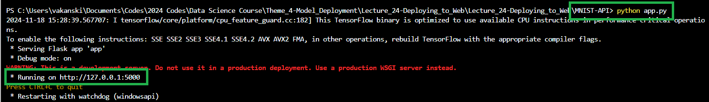
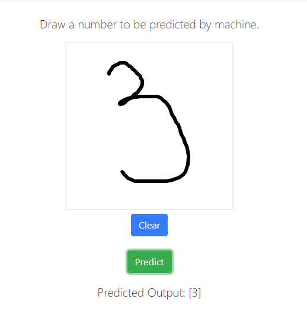
Figure: Run the web application.
And that’s a wrap (mic drop).
Appendix: Django Project Structure
The material in the Appendix is not required for quizzes and assignments.
A Django project for a web API typically has a structured project organization designed for modularity, maintainability, and scalability. A typical project structure for a Django web API has a main project directory (containing files for settings, URLs, and WSGI files), an application directory (containing files for models, URLs, views, tests, data format conversion), a command-line utility, and additional files, such as README, requirements, etc.
For classification of Iris flowers, one possible project structure for a web API with Django is shown below, with the files saved in the directory Django-Iris-Project.
Django-Iris-Project
├── iris_api
│ ├── __init__.py
│ ├── iris.csv
│ ├── model.py
│ ├── urls.py
│ ├── views.py
├── iris_project
│ ├── __init__.py
│ ├── settings.py
│ ├── urls.py
│ ├── wsgi.py
├── templates
│ ├── index.html
│ ├── output.html
├── manage.pyThe subdirectory iris_api contains model.py which is the same as the file that we used in the above section, and the files urls.py, and views.py. The content of these files is shown in the next cells. As expected, urls.py contains the routing configuration for mapping the URLs for the home and predict pages to the corresponding views. The views.py file contains the index_view to render the home page, and predict_class to handle requests and make predictions.
# iris_api/urls.py
from django.urls import path
from . import views
urlpatterns = [
path('', views.index_view, name='index'),
path('predict/', views.predict_class, name='predict'),
] # iris_api/views.py
from django.shortcuts import render
from django.http import HttpResponse
from . import model
def index_view(request):
return render(request, 'index.html')
def predict_class(request):
try:
slen = float(request.GET.get('slen'))
swid = float(request.GET.get('swid'))
plen = float(request.GET.get('plen'))
pwid = float(request.GET.get('pwid'))
# Get the output from the classification model
variety = model.classify(slen, swid, plen, pwid)
# Render the output in a new HTML page
return render(request, 'output.html', {'variety': variety})
except Exception as e:
return HttpResponse(f"An error occurred: {str(e)}", status=500) The subdirectory iris_project contains the files settings.py, urls.py, and wsgi.py. The settings.py file contains important settings like database configuration, installed apps, middleware, etc. The content of wsgi.py is shown below, and it sets up the configuration for the Web Server Gateway Interface (WSGI) for the project. This file links the Django application with a WSGI server by defining the application object, which the server invokes to handle requests.
# iris_project/wsgi.py
import os
from django.core.wsgi import get_wsgi_application
os.environ.setdefault('DJANGO_SETTINGS_MODULE', 'iris_project.settings')
application = get_wsgi_application() The manage.py file is a main command-line utility in Django for running the server, or for performing other tasks. In this case, it sets the environment variable for the project settings file (iris_project.settings), and imports the execute_from_command_line function which processes command-line arguments and executes the Django command runserver.
# manage.py
import os
import sys
def main():
os.environ.setdefault('DJANGO_SETTINGS_MODULE', 'iris_project.settings')
try:
from django.core.management import execute_from_command_line
except ImportError as exc:
raise ImportError(
"Couldn't import Django. Are you sure it's installed?"
) from exc
execute_from_command_line(sys.argv)
if __name__ == '__main__':
main() To run the server we use python manage.py runserver, and click on the URL to start the application on the local machine.
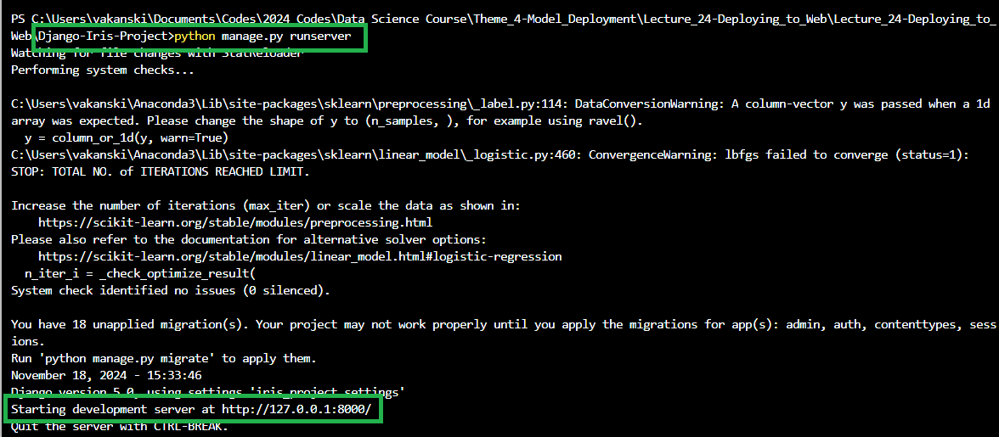
Figure: Run the application.
References
- Deploying Machine Learning Models using Flask, by Srishilesh P S, available at https://www.section.io/engineering-education/deploying-machine-learning-models-using-flask/.
- Deploying Deep Learning Models Part 1: Preparing the Model, by Vihar Kurama, available at: https://blog.paperspace.com/deploying-deep-learning-models-flask-web-python/.
- Python and REST APIs: Interacting With Web Service, by Jason Van Schooneveld, available at https://realpython.com/api-integration-in-python/.
- Getting Started with RESTful APIs and FastAPI, by Sunil Kumar Dash, available at https://www.analyticsvidhya.com/blog/2022/08/getting-started-with-restful-apis-and-fast-api/.